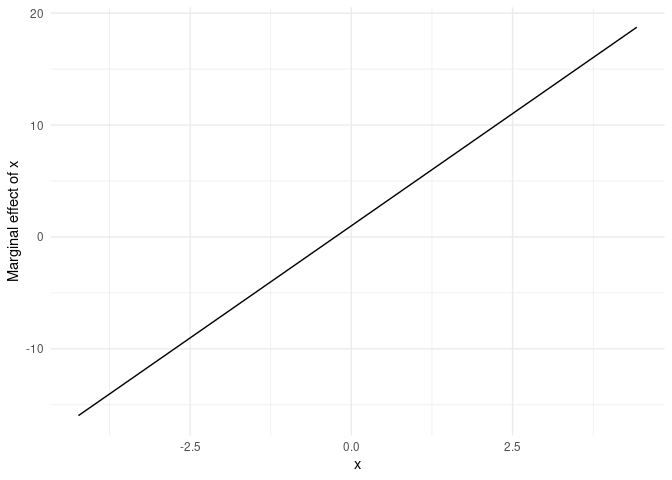

This package is still experimental. Use with caution!
What?
The marginaleffects package allows R users to compute and plot marginal effects for a wide variety of models.
A “marginal effect” is a measure of the association between a change in a regressor, and a change in the response variable. More formally, the excellent margins vignette defines the concept as follows:
Marginal effects are partial derivatives of the regression equation with respect to each variable in the model for each unit in the data.
Marginal effects are extremely useful, because they are intuitive and easy to interpret. They are often the main quantity of interest in an empirical analysis.
Why?
To calculate marginal effects we need to take derivatives of the regression equation. This can be challenging to do manually, especially when our models are non-linear, or when regressors are transformed or interacted. Computing the variance of a marginal effect is even more difficult.
The marginaleffects package hopes to do most of this hard work for you.
Many R packages advertise their ability to compute “marginal effects.” However, most of them do not actually compute marginal effects as defined above (the term is ambiguously defined in the statistical literature and used differently across fields). Instead, they compute related quantities such as “Estimated Marginal Means” or “Differences in Predicted Probabilities.” The rare packages that actually compute marginal effects are typically limited in the model types they support, and in the range of transformations they allow (interactions, polynomials, etc.).
The main package in the R ecosystem to compute marginal effects is the fantastic, trailblazing, and powerful margins by Thomas J. Leeper. The marginaleffects package is (essentially) a clone of margins.
So why did I write a clone?
-
Speed: In one benchmark (see below), computing unit-level standard errors is over 400x faster with
marginaleffects(1 minute vs. 150 milliseconds). - Efficiency: Smaller memory footprint (1.8GB vs 52MB in the same example).
- Extensibility: Adding support for new models is very easy, often requiring less than 10 lines of new code. In the medium run, the goal is to add support for several more model types.
-
ggplot2support for plotting (conditional) marginal effects. -
Tidy: The results produced by
marginaleffectsfollow “tidy” principles. They are easy to process and program with. - User interface: Slight changes to the user interface are intended to improve the experience.
- Active development
Downsides of marginaleffects include:
- Weights and simultation-based inference are not (yet) supported.
- More dependencies.
- Newer package with a smaller (read: nonexistent) user base.
How?
By using the numDeriv package to compute gradients and jacobians. That’s it. That’s the secret sauce.
Supported models
This table shows the list of models supported by marginaleffect, and shows which numerical results have been checked against alternative software packages: Stata’s margins command and R’s margins package.
I am very eager to add support for new models. Feel free to file a request on Github or – even better – submit some code.
Warning: When using marginaleffects with different models, you will probably have to adjust the prediction_type argument. Refer to the documentation of your modeling package to see what type argument is allowed in the predict function.
| Model | Support: Effect | Support: Std. Errors | Validity: Stata | Validity: Margins |
|---|---|---|---|---|
| stats::lm | x | x | x | x |
| stats::glm | x | x | x | x |
| aer::ivreg | x | x | x | x |
| aer::tobit | x | x | ||
| betareg::betareg | x | x | x | x |
| bife::bife | x | x | ||
| estimatr::lm_robust | x | x | ||
| fixest::feols | x | x | ||
| fixest::feglm | x | x | ||
| gam::gam | x | x | ||
| geepack::geeglm | x | x | ||
| ivreg::ivreg | x | x | x | x |
| lme4::lmer | x | x | dydx only | |
| lme4::glmer | x | x | dydx only | |
| MASS::glm.nb | x | x | x | |
| MASS::polr | x | x | ||
| MASS::rlm | x | x | ||
| nlme::gls | x | x | ||
| ordinal::clm | x | x | ||
| plm::plm | x | x | ||
| pscl::hurdle | x | x | ||
| rms::lrm | x | x | ||
| speedglm::speedglm | x | x | ||
| speedglm::speedlm | x | x | ||
| survey::svyglm | x | x | x |
Installation
You can install the latest version of marginaleffects from Github:
remotes::install_github("vincentarelbundock/marginaleffects")Getting started
First, we load the library, download the Palmer Penguins data from the Rdatasets archive, and estimate a GLM model:
library(marginaleffects)
dat <- read.csv("https://vincentarelbundock.github.io/Rdatasets/csv/palmerpenguins/penguins.csv")
dat$large_penguin <- ifelse(dat$body_mass_g > median(dat$body_mass_g, na.rm = TRUE), 1, 0)
mod <- glm(large_penguin ~ bill_length_mm + flipper_length_mm + species,
data = dat, family = binomial)A “marginal effect” is a unit-specific measure of association between a change in a regressor and a change in the regressand. In most cases, its value will depend on the values of all the other variables in the model for that specific unit.
The marginaleffects function thus computes a distinct estimate of the marginal effect and of the standard error for each regressor (“term”), for each unit of observation (“rowid”). You can view and manipulate the full results with functions like head, as you would with any other data.frame:
mfx <- marginaleffects(mod)
head(mfx)
#> rowid type term dydx std.error predicted_response
#> 1 1 response bill_length_mm 0.017622745 0.007837288 0.05123266
#> 2 1 response flipper_length_mm 0.006763748 0.001561740 0.05123266
#> 3 2 response bill_length_mm 0.035846649 0.011917159 0.11125087
#> 4 2 response flipper_length_mm 0.013758244 0.002880123 0.11125087
#> 5 3 response bill_length_mm 0.084433436 0.021119186 0.36919834
#> 6 3 response flipper_length_mm 0.032406447 0.008159318 0.36919834
#> large_penguin bill_length_mm flipper_length_mm species
#> 1 0 39.1 181 Adelie
#> 2 0 39.1 181 Adelie
#> 3 0 39.5 186 Adelie
#> 4 0 39.5 186 Adelie
#> 5 0 40.3 195 Adelie
#> 6 0 40.3 195 AdelieNotice that the results are presented in “tidy” long format: each row of the original dataset gets a unique rowid value, each unit-level marginal effect appears on a distinct row, and metadata appears neatly in separate columns. This makes it easy to operate on the results programmatically.
Average Marginal Effects
A dataset with one marginal effect estimate per unit of observation is a bit unwieldy and difficult to interpret. Many analysts like to report the “Average Marginal Effect”, that is, the average of all the observation-specific marginal effects. These are easy to compute based on the full data.frame shown above, but the summary function is convenient:
summary(mfx)
#> Average marginal effects
#> type Term Contrast Effect Std. Error z value
#> 1 response bill_length_mm 0.02757 0.00849 3.24819
#> 2 response flipper_length_mm 0.01058 0.00332 3.18766
#> 3 response species Chinstrap - Adelie -0.80570 0.07713 -10.44590
#> 4 response species Gentoo - Adelie 0.08359 0.11563 0.72294
#> 5 response species Gentoo - Chinstrap 0.88929 0.08534 10.42061
#> Pr(>|z|) 2.5 % 97.5 %
#> 1 0.0011614 0.01093 0.04421
#> 2 0.0014343 0.00408 0.01709
#> 3 2.9754e-14 -0.95687 -0.65453
#> 4 0.7498870 -0.14304 0.31023
#> 5 3.1086e-14 0.72203 1.05656
#>
#> Model type: glm
#> Prediction type: responseNote that since marginal effects are derivatives, they are only properly defined for continuous numeric variables. When the model also includes categorical regressors, the summary function will try to display relevant (regression-adjusted) contrasts between different categories, as shown above. This optional feature requires users to install the emmeans package.
You can also extract average marginal effects using tidy and glance methods which conform to the broom package specification:
tidy(mfx)
#> # A tibble: 5 × 9
#> # Groups: type [1]
#> type term contrast estimate std.error statistic p.value conf.low conf.high
#> <chr> <chr> <chr> <dbl> <dbl> <dbl> <dbl> <dbl> <dbl>
#> 1 response bill… <NA> 0.0276 0.00849 3.25 1.16e- 3 0.0109 0.0442
#> 2 response flip… <NA> 0.0106 0.00332 3.19 1.43e- 3 0.00408 0.0171
#> 3 response spec… Chinstr… -0.806 0.0771 -10.4 2.98e-14 -0.957 -0.655
#> 4 response spec… Gentoo … 0.0836 0.116 0.723 7.50e- 1 -0.143 0.310
#> 5 response spec… Gentoo … 0.889 0.0853 10.4 3.11e-14 0.722 1.06
glance(mfx)
#> null.deviance df.null logLik AIC BIC deviance df.residual nobs
#> 1 473.8202 341 -84.92257 179.8451 199.0192 169.8451 337 342Typical Marginal Effects
Sometimes, we are not interested in all the unit-specific marginal effects, but would rather look at the estimated marginal effects for certain “typical” individuals. The typical function helps us build datasets full of “typical” rows. For example, to generate artificial Adelies and Gentoos with 180mm flippers:
typical(flipper_length_mm = 180,
species = c("Adelie", "Gentoo"),
model = mod)
#> bill_length_mm flipper_length_mm species
#> 1 43.92193 180 Adelie
#> 2 43.92193 180 GentooThe same command can be used (omitting the model argument) to marginaleffects’s newdata argument to compute marginal effects for those (fictional) individuals:
marginaleffects(mod, newdata = typical(flipper_length_mm = 180,
species = c("Adelie", "Gentoo")))
#> rowid type term dydx std.error predicted_response
#> 1 1 response bill_length_mm 0.06067504 0.033257106 0.2125242
#> 2 1 response flipper_length_mm 0.02328764 0.005498309 0.2125242
#> 3 2 response bill_length_mm 0.08466334 0.040417468 0.3716454
#> 4 2 response flipper_length_mm 0.03249469 0.008616513 0.3716454
#> bill_length_mm flipper_length_mm species
#> 1 43.92193 180 Adelie
#> 2 43.92193 180 Adelie
#> 3 43.92193 180 Gentoo
#> 4 43.92193 180 GentooWhen variables are omitted from the typical call, they will automatically be set at their median or mode (depending on variable type).
Counterfactual Marginal Effects
The typical function allowed us look at completely fictional individuals. The counterfactual function lets us compute the marginal effects for the actual observations in our dataset, but with a few manipulated values. For example, this code will create a data.frame twice as long as the original dat, where each observation is repeated with different values of the flipper_length_mm variable:
nd <- counterfactual(flipper_length_mm = c(160, 180), model = mod)We see that the rows 1, 2, and 3 of the original dataset have been replicated twice, with different values of the flipper_length_mm variable:
nd[nd$rowid %in% 1:3,]
#> rowid bill_length_mm species flipper_length_mm
#> 1 1 39.1 Adelie 160
#> 2 2 39.5 Adelie 160
#> 3 3 40.3 Adelie 160
#> 343 1 39.1 Adelie 180
#> 344 2 39.5 Adelie 180
#> 345 3 40.3 Adelie 180Again, we can use this to compute average (or median) marginal effects over the counterfactual individuals:
Tables
Average marginal effects are easy to display in a regression table using packages like modelsummary:
library(modelsummary)
# fit models and store them in a named list
mod <- list(
"Logit" = glm(large_penguin ~ flipper_length_mm, data = dat, family = binomial),
"OLS" = lm(body_mass_g ~ flipper_length_mm + bill_length_mm, data = dat))
# apply the `marginaleffects` function to all the models using `lapply`
mfx <- lapply(mod, marginaleffects)
# build a table
modelsummary(mfx)| Logit | OLS | |
|---|---|---|
| flipper_length_mm | 0.020 | 48.145 |
| (0.003) | (2.011) | |
| bill_length_mm | 6.047 | |
| (5.180) | ||
| Num.Obs. | 342 | 342 |
| R2 | 0.760 | |
| R2 Adj. | 0.759 | |
| AIC | 222.2 | 5063.5 |
| BIC | 229.9 | 5078.8 |
| Log.Lik. | -109.111 | -2527.741 |
| F | 536.626 |
You can also display models with contrasts using modelsummary’s group argument:
mod <- list(
lm(body_mass_g ~ flipper_length_mm + species, data = dat),
lm(body_mass_g ~ species, data = dat))
mfx <- lapply(mod, marginaleffects)
modelsummary(mfx, group = term + contrast ~ model)| Model 1 | Model 2 | ||
|---|---|---|---|
| flipper_length_mm | 40.705 | ||
| (3.068) | |||
| species | Chinstrap - Adelie | -206.510 | 32.426 |
| (57.731) | (67.512) | ||
| Gentoo - Adelie | 266.810 | 1375.354 | |
| (95.264) | (56.148) | ||
| Gentoo - Chinstrap | 473.320 | 1342.928 | |
| (86.746) | (69.857) | ||
| Num.Obs. | 342 | 342 | |
| R2 | 0.783 | 0.670 | |
| R2 Adj. | 0.781 | 0.668 | |
| AIC | 5031.5 | 5172.7 | |
| BIC | 5050.7 | 5188.0 | |
| Log.Lik. | -2510.762 | -2582.337 | |
| F | 405.693 | 343.626 |
Plots (ggplot2)
Since the output of the marginaleffects function is “tidy”, it is very easy to use the data.frame that this function produces directly to draw plots with any drawing package you like. In addition, the marginaleffects package also offers functions to draw frequently used plots with ggplot2.
The first is a simple plot command to draw the average marginal effects:
mod <- lm(mpg ~ hp + wt + drat, data = mtcars)
mfx <- marginaleffects(mod)
plot(mfx)
The second is a plot_cme function to draw “Conditional Marginal Effects.” This is useful when a model includes interaction terms and we want to plot how the marginal effect of a variable changes as the value of a “condition” (or “moderator”) variable changes:

Simple analytic example: Quadratic term
Say you estimate a linear regression model with a quadratic term:
Y = β0 + β1X2 + ε
and obtain estimates of β0 = 1 and β1 = 2. Taking the partial derivative with respect to X and plugging in our estimates gives us the marginal effect of X on Y:
∂Y/∂X = β0 + 2 ⋅ β1X = 1 + 4X
This result suggests that the effect of a change in X on Y depends on the level of X. When X is large and positive, an increase in X is associated to a large increase in Y. When X is small and positive, an increase in X is associated to a small increase in Y. When X is a large negative value, an increase in X is associated with a decrease in Y.
marginaleffects arrives at the same conclusion in simultated data:
N <- 1e5
dat <- data.frame(x = rnorm(N))
dat$y <- 1 + 1 * dat$x + 2 * dat$x^2 + rnorm(N)
mod <- lm(y ~ x + I(x^2), dat)
marginaleffects(mod, newdata = typical(x = -2:2)) %>%
mutate(truth = 1 + 4 * x) %>%
select(dydx, truth)
#> dydx truth
#> 1 -6.983477 -7
#> 2 -2.990947 -3
#> 3 1.001582 1
#> 4 4.994111 5
#> 5 8.986640 9We can also plot the result with the plot_cme function:
plot_cme(mod, effect = "x", condition = "x")
Benchmarks
Here are two very naive benchmarks to compare the speed of marginaleffects and margins. Computing the unit-level marginal effects and standard errors in a logistic regression model with 2000 observations is over 400 times faster with marginaleffects. Calculating only the marginal effects is about 20% faster.
Simulate data and fit model:
N <- 2000
dat <- data.frame(
x2 = rnorm(N),
x1 = rnorm(N),
x3 = rnorm(N),
x4 = rnorm(N),
e = rnorm(N))
dat$y <- rbinom(N, 1, plogis(
dat$x1 + dat$x2 + dat$x3 + dat$x4 + dat$x3 * dat$x4))
mod <- glm(y ~ x1 + x2 + x3 * x4, data = dat, family = binomial)Marginal effects and standard errors:
bench::mark(
margins::margins(mod, unit_ses = TRUE),
marginaleffects(mod),
check = FALSE)
> expression min median `itr/sec` mem_alloc
> margins::margins(mod, unit_ses = TRUE) 1.08m 1.08m 0.0154 1.85GB
> marginaleffects(mod) 124.5ms 154.43ms 5.75 51.63MBMarginal effects only:
Extending marginaleffects to support new models
In most cases, extending marginaleffects to support new models is easy. Imagine you want to add support for an object called model of class EXAMPLE with N observations.
Step 1: Check if marginaleffects default functions work:
# returns a named vector of coefficients
get_coef(model)
# returns a named vector of predictions
# returns a named matrix of size NxK for models with K levels (e.g., multinomial logit)
get_predict(model)
# returns a named square matrix of size equal to the number of coefficients
get_vcov(model)
# returns a new model object with different stored coefficients
# calling get_predict(model) and get_predict(model_new) should produce different results
model_new <- set_coef(model, rep(0, length(get_coef(model))))
predict(model) != predict(model_new)If all of these functions work out-of-the-box, there’s a good chance your model will be supported automatically. If they do not work, move to…
Step 2: Define the missing methods.
Find the class name of your model by calling:
class(model)Then, create functions (methods) called get_coef.EXAMPLE, get_predict.EXAMPLE, vcov.EXAMPLE, and set_coef.EXAMPLE, with the “EXAMPLE” replaced by the name your model class.
Step 3: Add tests
Create a file called tests/testthat/test-PKGNAME.R and write a few tests. Ideally, we would like to compare the results obtained by marginaleffects to an external source, like the margins package for R, or the margins command for Stata.
Step 4: Finalize
Add your new model class to the lists of supported models in:
- The
sanity_modelfunction of theR/sanity.Rfile. - The supported models CSV table in
data-raw/supported_models.csv. Then, run thedata-raw/supported_models.Rscript to propagate your change throughout the package documentation. - The “Suggests” list in the
DESCRIPTIONfile.